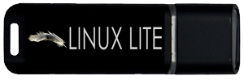

Code
This is a very exciting time in Linux Lite development. We are in the process of producing custom, free software for Linux Lite. Our philosophy is basic code, simple design and minimal dependency. Our applications should be clean, fast and simple. Intelligent, well thought out design with great attention to detail. We use the GPL v2. If you're a developer and would like to help with Linux Lite, have a read through our Ethos here. We also pay developers to help improve our software, see here for details.
Donate
Linux Lite is free and can best be described as a labour of love.
The goal of this project is to work on it full time so that we can deliver to you a better operating system with each release. More time, more features, greater options. If you use Linux Lite and want to contribute towards its success, please consider donating by clicking here. Donations go towards development and online services such as websites and repositories. Every donor is listed on our donate page, regardless of their contribution. Thank you for making a difference and for supporting free software.
Linux Lite pays developers to help improve our custom software via Bountysource. A portion of your Donation goes towards this service - https://www.bountysource.com/teams/linuxlite This is a win-win outcome for everyone connected to Linux Lite, whether you're a developer, a supporter or someone who is using Linux Lite everyday, everyone benefits.
Another way to support the operating system is to purchase official Linux Lite Merchandise. We have Linux Lite installation media and a variety of stickers to choose from. Your purchases are also listed as Donations here on our donate page. Click on the USB drive below to view our secure online store.
Social Media
Social Media has become very powerful and effective way of proliferating knowledge throughout the world. We encourage you to spread the word about free operating systems such as Linux Lite, see the TIP below for some suggestions.